TCP/IP Explorer
Description
The TCP/IP Explorer app creates a TCP/IP client connection to an existing TCP/IP server. After you connect to a server, you can communicate with it, plot and analyze data, export data to the workspace, and generate MATLAB® code.
Using this app, you can:
Configure TCP/IP communication properties.
Send binary or string data from the TCP/IP client to the connected server.
Read binary or string data sent to the TCP/IP client from the connected server.
Plot data in a figure window.
Analyze data by viewing it in the Signal Analyzer (Signal Processing Toolbox) app.
Export data to the workspace.
Generate a MATLAB Live Script file that uses the
tcpclientinterface.
You can use this app only as a client and not as a server. For information on creating a TCP/IP server, see Communicate Using TCP/IP Server Sockets (Instrument Control Toolbox).
Open the TCP/IP Explorer App
MATLAB Toolstrip: On the Apps tab, under Test and Measurement, click the app icon.
MATLAB command prompt: Enter
tcpipExplorer.
Examples
In this example, connect to a TCP/IP server.
Open the TCP/IP Explorer app from either the Apps tab in the MATLAB toolstrip or the MATLAB command prompt.
Click Configure TCP/IP Connection.
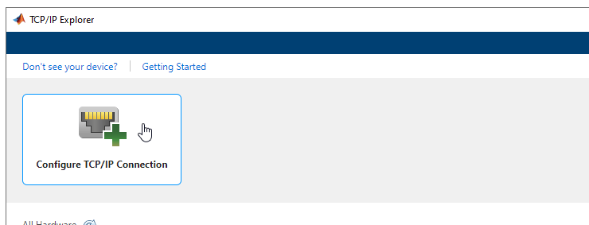
Specify Address as the server host name
www.mathworks.com and Port as the server
port 80. You can leave the Connect Timeout
as the default value of 10 and the Transfer
Delay as the default value of Enabled. For more
information about these parameters, see Configure Connection in TCP/IP Explorer.
Click Confirm Parameters to create a TCP/IP client connected to the specified TCP/IP server.
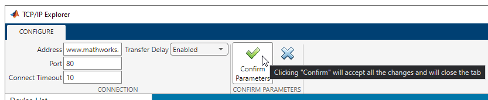
Alternatively, you can specify Address as the server IP
address. In this example, the IP address for the host name is
144.212.130.17.
The TCP/IP Explorer tab opens in the app and your client TCP/IP Connection appears in the Device List.
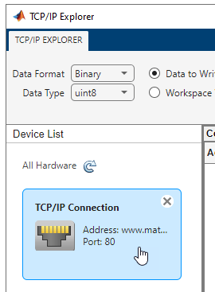
View Connection properties and configure Communication properties from the Property Inspector. You can specify the Terminator, ByteOrder, and Timeout properties of the server before writing and reading data.
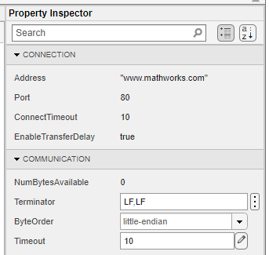
In this example, write ASCII-terminated data to a TCP/IP client connected to a server and read data back from it. The TCP/IP server in this example has already been programmed with custom commands and responses.
Open the TCP/IP Explorer app from either the Apps tab in the MATLAB toolstrip or the MATLAB command prompt.
Click Configure TCP/IP Connection.
Specify Address as the server address and
Port as the server port to connect to the server. The values
specified in this example are specific to this server and do not work on other machines.
You can leave the Connect Timeout as the default value of
10. Click Confirm Parameters to create a
TCP/IP client connected to the specified server.
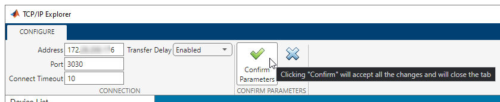
Before writing or reading data, you can modify Communication properties from the Property Inspector. Ensure that these properties match the appropriate values for the server. For this example, the values shown already match the server configuration.
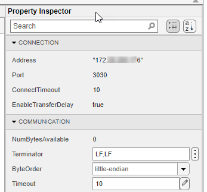
Some TCP/IP clients can accept string queries to send to the server and respond to them. In this example, the connected server has been programmed to receive and respond to customized string commands. The commands in this example do not work for other clients.
Send the Send Status? command from the client to the server.
In the Write section, set the Data Format to
ASCII-Terminated String. The Data Type
changes to string since that is the only possible option.
Specify the Data to Write as Send Status?.
Click Write to write the data from the client to the server. For
ASCII-terminated string write operations, the write terminator specified by the
Terminator property is automatically appended to the data being
written.
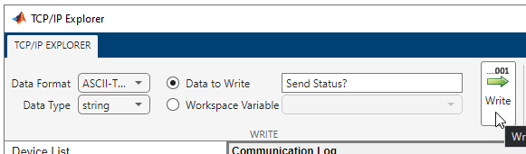
You can view the response to this command by reading from the client. In the
Read section, set the Data Format to
ASCII-Terminated String, which changes the Data
Type to string. Read the data sent to the client
from the server by clicking Read. Data is read until the first
occurrence of a terminator.
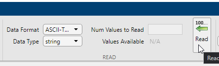
View both the write and read operations in the Communication
Log pane. The read operation shows the message Server Running on "172.XX.XXX.XXX" and port 3030.. You can
select a row to export it as a variable to the workspace by following the steps in Export Data from Communication Log and Generate MATLAB Script.
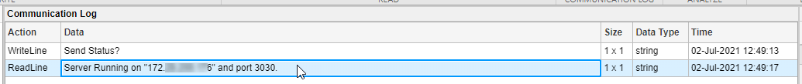
The MATLAB Code Log pane shows the code for these operations. You can export this code as a MATLAB Live Script file by following the steps in Export Data from Communication Log and Generate MATLAB Script.
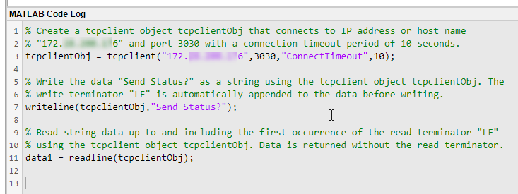
In this example, write ASCII-terminated data to a TCP/IP client connected to a server and read data back from it. The TCP/IP server in this example has already been programmed with custom commands and responses.
Open the TCP/IP Explorer app from either the Apps tab in the MATLAB toolstrip or the MATLAB command prompt.
Click Configure TCP/IP Connection.
Specify Address as the server address and
Port as the server port to connect to the server. The values
specified in this example are specific to this server and do not work on other machines.
You can leave the Connect Timeout as the default value of
10. Click Confirm Parameters to create a
TCP/IP client connected to the specified server.
Before writing or reading data, you can modify Communication properties from the Property Inspector. Ensure that these properties match the appropriate values for the server. For this example, the values shown already match the server configuration.
Some TCP/IP clients can accept string queries to send to the server and respond to them. In this example, the connected server has been programmed to receive and respond to customized string commands. The commands in this example do not work for other clients.
Send the Send Sine-Wave Data command from the client to the
server. In the Write section, set the Data
Format to ASCII-Terminated String. The
Data Type changes to string since that
is the only possible option. Specify the Data to Write as
Send Sine-Wave Data. Click Write to write
the data from the client to the server. For ASCII-terminated string write operations,
the write terminator specified by the Terminator property is
automatically appended to the data being written.
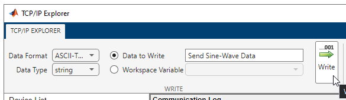
Send another command to the client. In the MATLAB command prompt, create a workspace variable for this command.
command = "Send Arbitrary Waveform";Select Workspace Variable and select the
command option. Click Write.
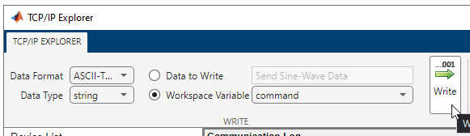
Before reading data from the client, you must specify the correct data format and
type. In this example, the responses to the string commands are stored as binary data
with double precision. In the Read section, set the Data
Format to Binary, and the Data
Type to double. The Values
Available parameter is 1063. The first 63 values are the
response to the Send Sine-Wave Data command and the remaining 1000
values are the response to the Send Arbitrary Waveform
command.
Specify the Num Values to Read as 63.
Read the first 63 values of the data from the client by clicking
Read.
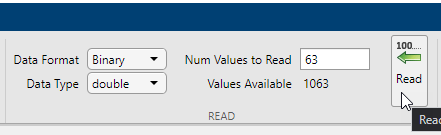
If you do not specify a value for the Num Values to Read parameter, you can read all the available values. Read the remaining 1000 values by clearing the Num Values to Read parameter and clicking Read.
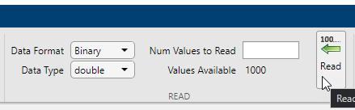
View both the write and read operations in the Communication Log pane. You can select a row to plot it, view it in the Signal Analyzer app, or export it as a variable to the workspace. Select the data from the first read operation.
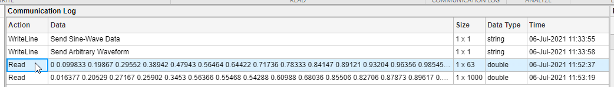
Click Plot in the Analyze section.
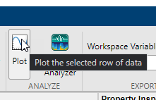
A new figure window with a plot of the data opens. You can modify the plot and figure from the command window.
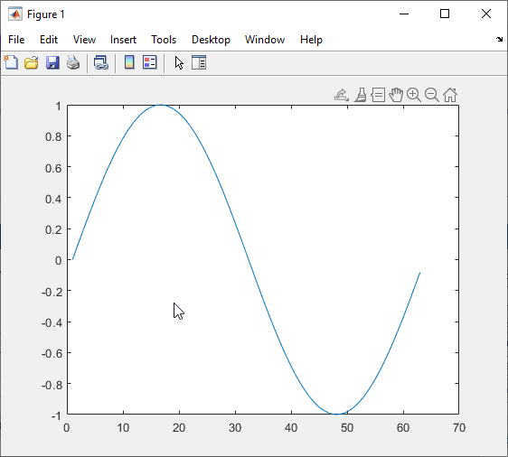
Select the other response data and click Plot again. Another figure window with a plot of the data opens.
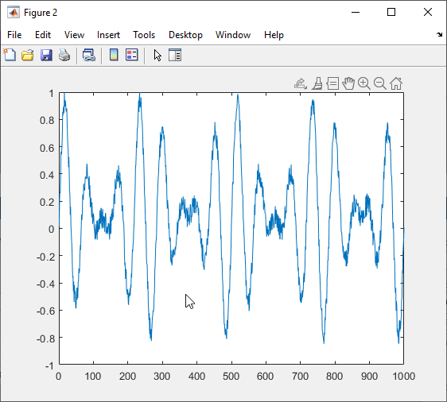
The MATLAB Code Log pane shows the code for these operations (except for plot creation). You can export this code as a MATLAB Live Script file by following the steps in Export Data from Communication Log and Generate MATLAB Script.
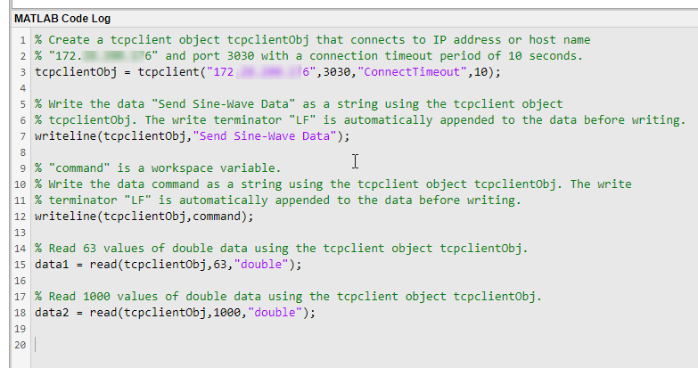
In this example, plot a row of data from the Communication Log in a new figure window. You can plot any numeric data that you have written to or read from the TCP/IP server.
The Communication Log captures all the data that you have written to or read from the connected TCP/IP server.
Select a row of data.
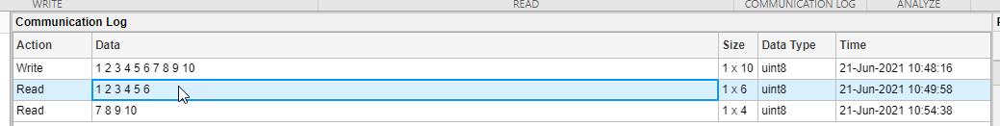
Click Plot in the Analyze section.
A new figure window with a plot of the data opens. You can modify the plot and figure from the command window.
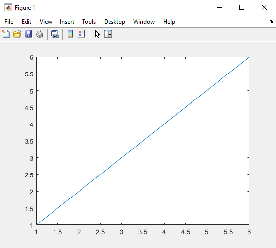
In this example, use the different options for exporting data and app interactions.
The Communication Log captures all the data that you have written to or read from the connected TCP/IP server.
Select a row of data.
Export this row of data to the workspace as the variable specified in Workspace Variable. The app provides a default variable name, but you can edit it. The data is saved in the workspace as its Data Type. Change the variable name, click Export, and select the Export Selected Row option.
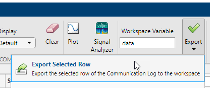
You can also export the entirety of the Communication Log to
the workspace as a timetable. Change the variable name, click
Export, and select the Export Communication
Log option.
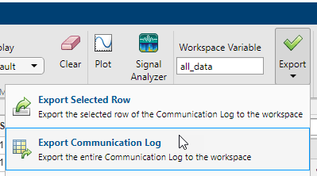
Besides exporting data, you can also export the code from the MATLAB Code
Log pane. This pane contains all tcpclient object
creation, write, read, and property configuration operations that you do in the
app.
Generate a MATLAB Live Script file and open it in the Live Editor by clicking Export and selecting the Generate MATLAB Script option.
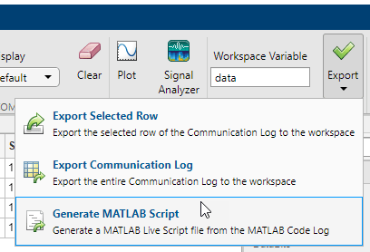
After the Live Script file opens, you can modify the code to fit your needs and save the file.
Parameters
Write Section
Specify the data type of the data to write from the TCP/IP client to the connected server. This parameter determines the number of bytes to write for each value and the interpretation of those bytes as a MATLAB data type.
Dependencies
If you set the Data Format to ASCII-Terminated
String, the only possible value for this parameter is
string.
This parameter can be set to uint64 or
int64 only if you select the Workspace
Variable option instead of Data to Write.
Specify the data to write from the TCP/IP client to the connected server. The data is written as the type specified by Data Type, regardless of the format in this parameter.
Select either this parameter or Workspace Variable to write data.
Select an existing workspace variable to write from the TCP/IP client to the connected server. The data is written as the type specified by Data Type, regardless of the data type of the variable in the workspace.
If Data Format is Binary, you can
select the following types of workspace variables:
Row (1-by-
N) or column (N-by-1) vector of numeric values1-by-
Ncharacter vector1-by-1 string scalar
If Data Format is ASCII-Terminated
String, you can select the following types of workspace variables:
1-by-
Ncharacter vector1-by-1 string scalar
Select either this parameter or Data to Write to write data.
Click this button to write the data specified in Data to Write
or Workspace Variable from the TCP/IP client to the connected
server as the specified Data Type. If Data
Format is ASCII-Terminated String, the write
terminator specified by the Terminator
property is automatically appended to the data being written.
This button is equivalent to performing the write or
writeline
functions.
Read Section
Specify the data type of the data received by the TCP/IP client from the connected server. This parameter determines the number of bytes to read for each value and the interpretation of those bytes as a MATLAB data type.
Dependencies
If you set the Data Format to ASCII-Terminated
String, the only possible value for this parameter is
string.
Specify the number of values to read as a positive integer. This parameter must be less than or equal to Values Available. If you leave this parameter empty, the client reads all available values using the specified Data Type.
Dependencies
To enable this parameter, set Data Format to
Binary.
This parameter is read-only.
This is the number of values available to read in the format specified by Data Type.
Dependencies
To enable this parameter, set Data Format to
Binary.
Click this button to read data received by the TCP/IP client from the connected
server. If Data Format is Binary, read
the number of values specified by Num Values to Read in the form
specified by Data Type. If Data Format is
ASCII-Terminated String, read data until the first
occurrence of the read terminator specified by the Terminator
property.
This button is equivalent to the read or readline
functions.
Communication Log Section
View the data in the Data column of the Communication
Log as Binary, ASCII,
or Hexadecimal, as applicable based on the data type. This
parameter does not change the original value or data type of the data. For more
information about these formats, see Data Type Conversion.
Click this button to clear all the contents of the Communication Log.
Analyze Section
Click this button to open a new figure window that plots the data currently selected in the Communication Log. You can select only one row of data, and the selected data must be numeric.
Unlike Write and Read, this operation is not captured in the MATLAB Code Log pane.
Click this button to launch the Signal Analyzer (Signal Processing Toolbox) app and send it the data currently selected in the Communication Log. You can select only one row of data, and the selected data must be a numeric vector.
You must have Signal Processing Toolbox™ installed to use the Signal Analyzer app.
Export Section
Edit the name of the workspace variable that you want to export data to. The
Export Selected Row and Export Communication
Log options in the Export drop-down menu save your
data in the workspace as the variable specified in this field.
You must specify a valid MATLAB variable name that does not already exist in the workspace. If you specify an invalid name, it is automatically changed to a valid variable name.
Click this button to select one of the following options for exporting data from this app:
Export Selected Row— Save the data currently selected in the Communication Log to the workspace as the variable specified by Workspace Variable. The data is saved as its Data Type.Export Communication Log— Save all of the Communication Log data to the workspace as atimetablewith the variable name specified by Workspace Variable.Generate MATLAB Script— Generate a MATLAB Live Script file populated with the content in MATLAB Code Log and open it in the Live Editor.
Property Inspector
This parameter is read-only.
Server name or IP address, returned as a character vector. This property is set during TCP/IP Connection configuration.
This parameter is read-only.
Server port, returned as a number between 1 and 65535, inclusive. This property is set during TCP/IP Connection configuration.
This parameter is read-only.
Allowed time in seconds to connect to the server, specified as a numeric value. This property specifies the maximum time to wait for a connection request to the specified server to succeed or fail. This property is set during TCP/IP Connection configuration.
This parameter is read-only.
Allow delayed acknowledgment from server, specified as logical
true or false. This property indicates whether
Nagle's algorithm is on or off for the connection.
If this property is true, the client collects small segments of
outstanding data and sends them in a single packet when acknowledgment (ACK) arrives
from the server. Set this property to false if you want to
immediately send data to the network. If a network is slow, you can improve its
performance by enabling the transfer delay. However, on a fast network acknowledgments
arrive quickly and the difference between enabling or disabling the transfer delay is
negligible.
This property is set during TCP/IP Connection configuration.
This parameter is read-only.
Number of bytes available to read, returned as a numeric value.
Terminator characters for reading and writing ASCII-terminated data, specified as
LF, CR,
CR/LF, or a number from 0 to 255. The read terminator is
followed by the write terminator and the two are separated by a comma. Click the
vertical ellipsis icon to specify read and write terminator character values
separately.
Sequential order in which bytes are arranged into larger numerical values. If the
byte order is little-endian, then the remote server stores
the first byte in the first memory address. If the byte order is
big-endian, then the remote server stores the last byte in
the first memory address.
Configure the byte order to match the appropriate value for your server.
Allowed time in seconds to complete read operations, specified as a numeric value.
Version History
Introduced in R2021b